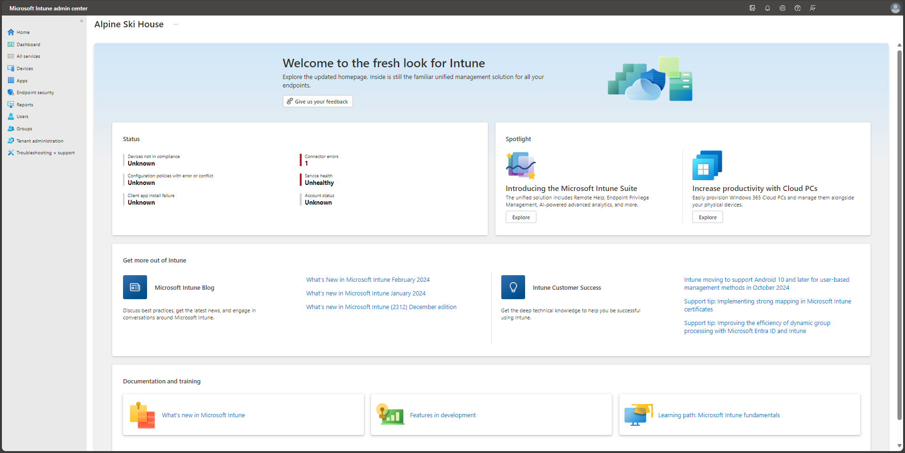

Endpoint Management • Device Compliance • Application Deployment • Security Baselines • Conditional Access Support
Microsoft Intune is a cloud-based endpoint management platform used to manage devices, applications, compliance policies, and endpoint security settings across an organization.
As a Security Analyst, I use Intune to review device health, enforce compliance requirements, support secure device enrollment, and monitor endpoint security policy status.
My hands-on experience includes device enrollment, compliance policies, configuration profiles, application deployment, security baselines, and integration with Microsoft Entra ID and Conditional Access.
Endpoint and Device Security Management

This project demonstrates my practical experience working with Microsoft Intune to manage and secure endpoints. The objective was to improve device compliance, reduce configuration risk, and support secure access to enterprise resources.
I worked with device groups, enrollment status, configuration profiles, compliance policies, application assignments, and endpoint security settings in a Microsoft cloud environment.
The project also included reviewing non-compliant devices, tracking policy deployment status, and supporting Conditional Access decisions using device compliance signals.
Security Analyst
Endpoint Security Operations
Microsoft Intune
Device Compliance & Security
Microsoft Cloud Endpoint Management
MDM • Compliance • Security Baselines
Activities performed while working with Microsoft Intune
Created and reviewed device compliance policies to support secure access requirements.
Reviewed enrolled devices, non-compliant endpoints, policy failures, and remediation status.
Assigned required applications to device groups and monitored installation status.
Configured endpoint security settings, security baselines, and device configuration profiles.
Endpoint management tools and Microsoft technologies used throughout the project
✔ Managed endpoint compliance policies.
✔ Reviewed device enrollment and policy deployment status.
✔ Supported secure application deployment.
✔ Applied endpoint security settings and baselines.
✔ Improved visibility into non-compliant devices.
Microsoft Intune
Endpoint Management
Device Compliance
Application Deployment
Endpoint Security
Microsoft Entra ID
Security improvements achieved through Microsoft Intune
Applied device security settings and baselines to reduce endpoint configuration risk.
Tracked compliant and non-compliant devices to support secure access decisions.
Reviewed policy assignment status and identified devices that needed remediation.
Managed application deployment and installation visibility across endpoint groups.
Integrated device compliance with Microsoft Entra ID and Conditional Access workflows.
Supported repeatable endpoint management practices for enterprise device security.
This page showcases my hands-on experience with Microsoft Intune, where I manage endpoint security, monitor compliance, deploy apps, review device health, and support secure access controls.
Endpoint Management • Device Compliance • Security Baselines
Endpoint management workflow followed during Intune administration
Reviewed device enrollment and organized endpoints into groups for policy targeting.
Configured compliance policies, device profiles, endpoint security settings, and baselines.
Reviewed compliant devices, failed policies, application deployments, and device health.
Documented non-compliance, supported fixes, and confirmed improved device posture.
End-to-end lifecycle used to manage and secure endpoints with Intune.
Microsoft Intune
Reviewed device onboarding, ownership, enrollment state, and group membership.
Compliance and Configuration Profiles
Configured compliance requirements, security settings, and device configuration profiles.
Endpoint Manager
Assigned applications to device groups and monitored installation success or failure.
Device Compliance Dashboard
Tracked non-compliant devices and reviewed policy results for remediation actions.
Endpoint Security Operations
Improved policy targeting, documentation, and endpoint security practices.